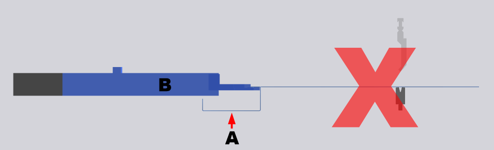

In this dialog box you can make compensation settings for each bending process.
- Advantage: increases the precision for the bending processes concerned.
- Disadvantage: can significantly increase the time taken to bend a part.
NOTE: These settings are overwritten if the compensation is assigned automatically.
These options are only available for the following machines when the relevant option has been enabled in the Administrator:
- Xpert: Static and dynamic crowning available.
- Xact: Only static crowning is available.
Sheet thickness compensation
The settings in this area define how compensation for variations in sheet thickness is achieved.
- Off
- On
- Adopt
Sheet-thickness compensation is disabled for the selected process.
Sheet-thickness compensation is enabled for the selected process.
The sheet-thickness compensation tool adopts the measured value from the process that is specified in the Adopt from process option.
Defines the process from which the measured compensation value is adopted for the selected process.
NOTE: You can only select processes for which the Mode option is set to On.
- Default
- Never stop
-
CAUTION:
Risk of collision
Never use this option for bent sides (A) below the backgauge finger (B). The side can collide with the backgauge finger and either pull back the part or bend it out of shape.
Fig.: Bent sides below the backgauge finger.

This is the default setting for the ram behavior.
If a retraction is programmed, the ram pauses at the clamping point and retracts the backgauges before the bending action.
If a retraction is programmed, measurement of the sheet thickness can fail for the selected process. In this case use the Never stop attribute.
If a retraction is programmed, the ram does not pause at the clamping point to make sure that the sheet thickness can be measured for compensation. The retraction is still performed though!
Crowning A system for compensating for deviations that can be traced to deflection of the top and bottom tool during the bending process.
Attention! On Xpert machines, applying the Automatic function resets the Static crowning option to the default setting of Dynamic crowning.
- Static
- Dynamic
The pressure is calculated and set on the basis of the pressing force.
The pressure is already active when the ram leaves the UDC and continues to be applied until the end of the bending operation.
The CNC adjusts the pressure automatically. The greater the pressing force the greater the pressure generated for crowning. The crowning pressure is maintained from the clamping point to the end of the bending operation.